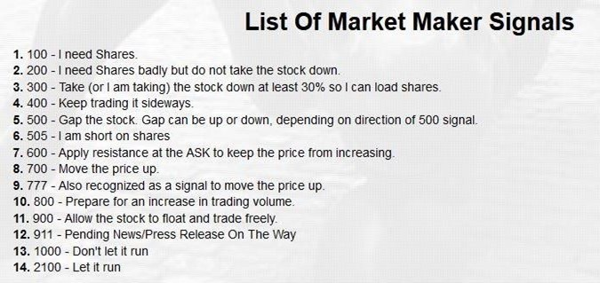
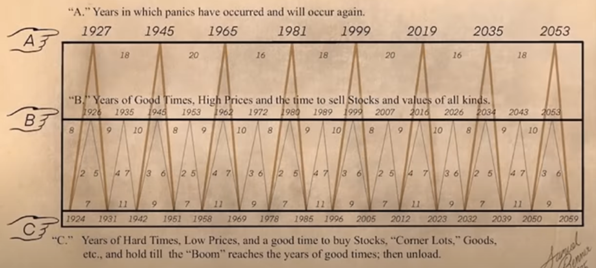
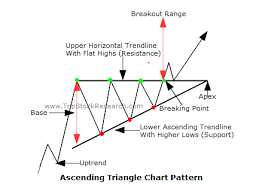
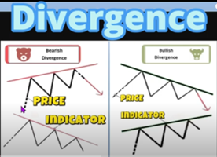
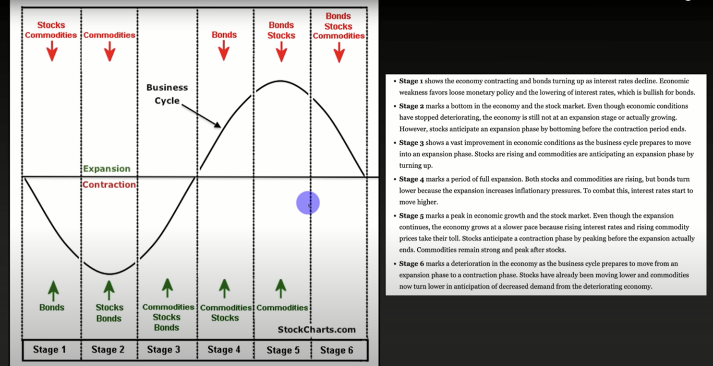

Watchlist Overview
For live data, open the ThinkorSwim watchlist using the button below:
Open TOS Watchlist| Symbol | Last Price | Change | % Change | Volume | Market Cap |
|---|---|---|---|---|---|
| SPY | 450.10 | +2.05 | +0.46% | 25.3M | $400B |
| AAPL | 175.60 | +1.20 | +0.69% | 60.2M | $2.7T |
| TSLA | 245.30 | -3.10 | -1.25% | 30.1M | $775B |
Dino Lookup
Gallery




